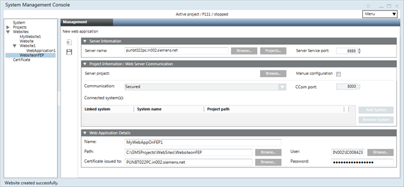
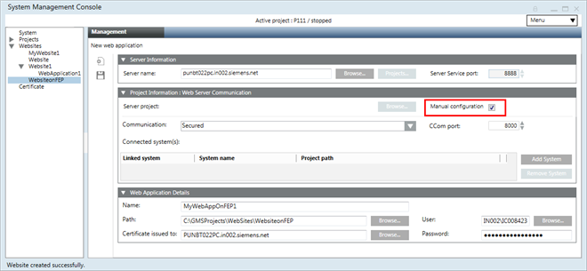

Web Applications on Client/FEP
You can create a web application on a client/FEP station either in automatic or in manual mode. Once created, use the web application HTTPs URL to launch the Desigo CC web page.
For information on naming conventions for web applications, see Naming Rules for Websites, Web Applications, Web Server, and Projects in WebSites.


When you click Create Web Application  , in addition to the web application details, you must provide the server details, including those of the project that you want to connect to.
, in addition to the web application details, you must provide the server details, including those of the project that you want to connect to.